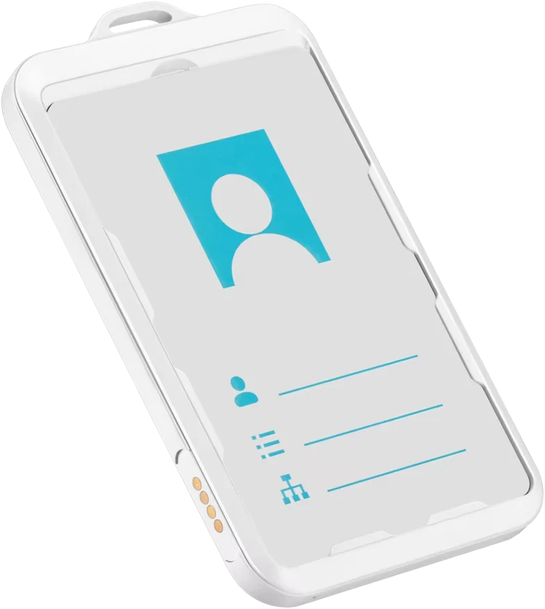
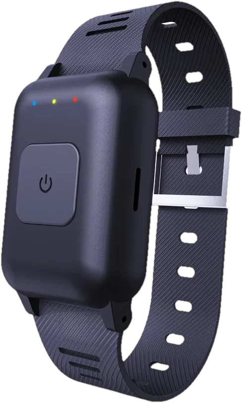

觀光直升機墜毀，機上 2 名台灣旅客
約 300 人搜救，受地形與火山氣體阻隔，近一個月後才以無人機確認機體位置。
沒有位置，再多人力也進不去。T-Patrol 平安福團體活動即時定位安全管理系統
成員戴上識別證套或手環，帶隊者在手機上隨時看得到、一鍵點名。校外教學、員工旅遊、營隊路跑都適用。
王小明 離開了安全範圍・帶隊手機已通知
這是帶隊者最怕的四件事。直接預約試辦
約 300 人搜救，受地形與火山氣體阻隔，近一個月後才以無人機確認機體位置。
沒有位置，再多人力也進不去。醒來全場已空，獨自走上公路被警察發現。校方在警方通知前不知情。
點名靠人，就會有漏掉的一次。露友與警消約 200 人搜山，近 3 小時後才尋獲。
走失後每一分鐘都在擴大搜尋範圍。手機位置分享關閉後失去蹤跡，警犬與直升機搜索，FBI 協助，仍未尋獲。
手機可以關，定位裝置不會。資料來源：聯合新聞網、經濟日報、FITSNews、自由時報、ETtoday、CNN
直接把學生證、員工證放進去，掛在胸前就好，不用多帶一樣東西。

掛在胸前
適合校外教學、員工旅遊、參訪導覽。

戴在手上
適合戶外活動、露營、路跑。
不用採購硬體，依活動次數租用。看怎麼試辦
地圖追蹤、一鍵點名、活動管理。
不用裝 App，任何手機掃 QR Code 就能看。
在管理後台設定電子圍籬，成員一離開範圍就自動通知。
「山區海線 14 天，
軌跡一天都沒斷。」
© 2026 信誌科技股份有限公司隱私權政策服務條款刪除帳號也看看 T-Vouch